Mitsubishi
Mitsubishi
Mitsubishi Motors is one of the divisions of the Japanese corporation Mitsubishi. At the end of World War I, this division was created that originally manufactured aircraft engines, which came to be used in World War II. Mitsubishi means "three diamonds" and refers to the three diamond logo that was adopted in March 1873 by the first company in the Mitsubishi group. The logo, in its current form, has been registered since 1914. In 1917 it became the first Japanese automobile company to manufacture a series car in Japan, the “A” model.
Lancer Evolution X
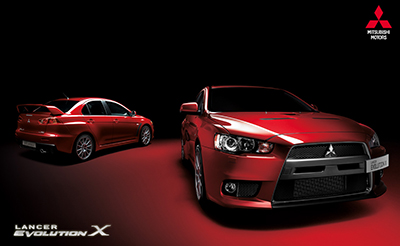
The Mitsubishi Lancer is a C-segment passenger car produced by the Japanese manufacturer Mitsubishi Motors from 1973 to 2012. There are eight generations of the Lancer, the last of which was officially presented at the 2007 Detroit Auto Show. Its main rivals were the Honda Civic, Toyota Corolla and Subaru Impreza.
L200
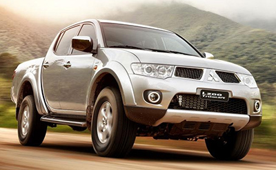
The Mitsubishi L200 also known as the Mighty Max, Forte, Triton, Sportero or Stada is a compact pickup truck produced by Mitsubishi Motors. Originally known as the Forte in Japan from 1978 to 1986, the name was later changed in favor of the Mitsubishi Strada, although in most export markets it is known as the L200 model.
Eclipse
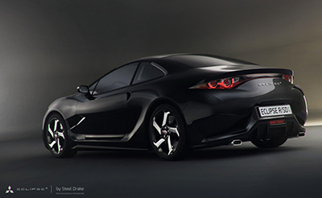
The Eclipse has gone through four distinct generations. The first two are closely related and share several parts, while the third generation is based on a new platform and most of its components are different from the first and second generation Eclipses. The fourth generation was put on sale in June 2005.
Nissan
Nissan
Nissan Motor Company, Limited is a Japanese automobile manufacturer. Its common name, Nissan, is an acronym for "Nippon Sangyo" (Japanese for "Japanese Industry"). It is among the top automotive companies in terms of annual vehicle production.
Navara
Nissan Navara is the name of the D22 and D40 generations of Nissan pickup trucks sold in Asia; in North, Central and South America and the Philippines it is sold as the Nissan Frontier. The line began in 1997, replacing the Nissan D21 Hardbody pickup. As of 2002, the D22 pickup series is no longer marketed in Japan; the main market for the D22 is North America. It is now built at Nissan's factory in Canton, Mississippi.
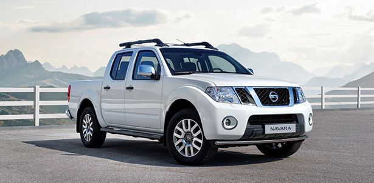Frontier
The Nissan Frontier, known in other markets as Navara, Terrano, Hardbody or Pickup, is a medium truck from the Japanese manufacturer Nissan. The third generation is manufactured in Tennessee (United States) and Barcelona (Spain). The second generation, known as the D-22, is currently manufactured in Mexico (NP-300 Trucks), Brazil, Egypt, the Philippines, China, Thailand, and South Africa. Currently this generation is called NP-300 in some markets.
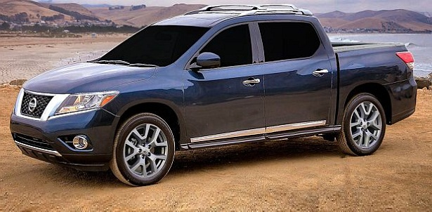Toyota
Toyota
Toyota Motor Corporation, simply called Toyota, is a Japanese automobile manufacturer headquartered in Toyota (Aichi), Japan. Toyota was the largest automaker in 2012 (by production) with global sales of approximately 9.8 million vehicles. However, it did not have this leadership in 2011, when there was a strong industrial recession in Japan, as a consequence of the earthquake that occurred on March 11 of that year and which, among other things, affected the town of Fukushima. Because of this, Toyota fell back to third place, giving up the lead to General Motors itself and to Volkswagen, which ranked second.
Hilux
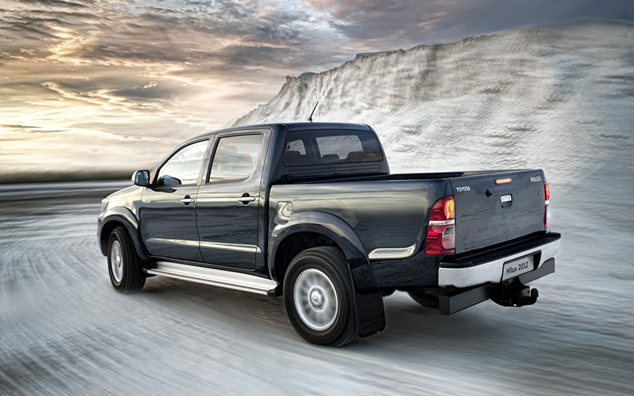
The Toyota Hilux is a midsize pickup truck produced by the Japanese vehicle manufacturer Toyota in various parts of the world. The Toyota Hilux is a compact pickup truck produced and marketed by Toyota Motor Corporation. In the United States and Canada, the Hilux name was briefly retired in 1976 in favor of generic names such as Truck, Pickup Truck, or Compact Truck, until it was replaced by Tacoma in 1995.
Celica
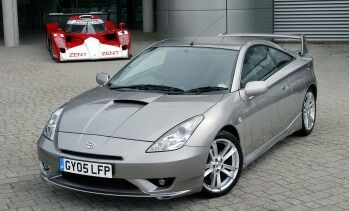
The Toyota Celica is a series of popular coupes made by the Japanese company Toyota. The name is derived from the Latin word coelica which means "heavenly". This car began to be manufactured in Japan in 1967. Considered, along with the Toyota Supra, one of the best cars manufactured by Toyota. Throughout its useful life the Celica has been powered by different four-cylinder engines.
Supra
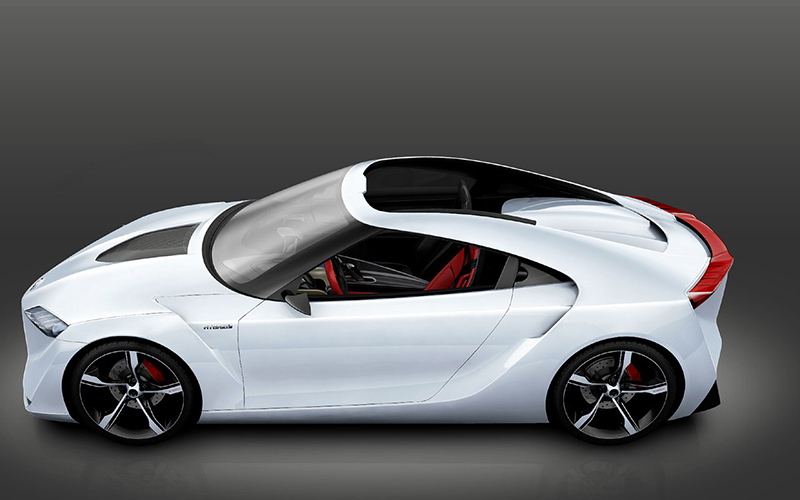
The Toyota Supra is a rear-wheel drive sports car produced by the Japanese manufacturer Toyota from 1979 to 2002. In its beginnings, the Toyota Supra was derived from the Toyota Celica, although slightly longer and wider. Starting in mid-1986, the third generation of the Toyota Supra became its own model. The Supra also traces its roots to the Toyota 2000GT, with the engine being its prime example.
Honda
Honda
Honda Motor Co. Ltd, is a company of Japanese origin that manufactures automobiles, propellers for land, water, and air vehicles, motorcycles, and general components for the automotive industry.
Civic
The Honda Civic is a C-segment automobile manufactured by the Japanese company Honda Motor Co., Ltd. After having gone through several generational changes (they are currently on the ninth), the Civic has grown in size, positioning itself between the Honda Fit and the honda accord. All versions so far have a transverse 4-cylinder front engine, front-wheel drive, and numerous body styles, including sedan, coupe, hatchback, and Aerodeck.

CR-V
The Honda CR-V is a C-segment off-road car produced by the Japanese car manufacturer Honda. The CR-V, whose initials mean "Civic Recreation Vehicle" covers four generations, launched respectively in the years 1995, 2001, 2006 and 2011, which share structural elements with different generations of the Honda Civic, a touring car. It is a five-door with five seats available with front-wheel drive and four-wheel drive.
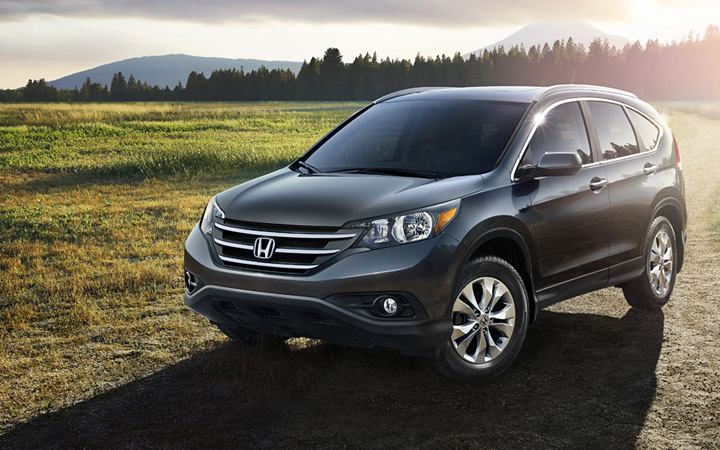Mazda
Mazda
Mazda Motor Corporation is an automobile manufacturer headquartered in Hiroshima, with plants in the towns of Hiroshima (Ujina factory); Nishinoura, Nakanoseki (Hofu); and Miyoshi, Japan. In 2010, it produced 1,307,540 cars with sales in China, Japan, Europe, South America, and North America.
Mazda 3
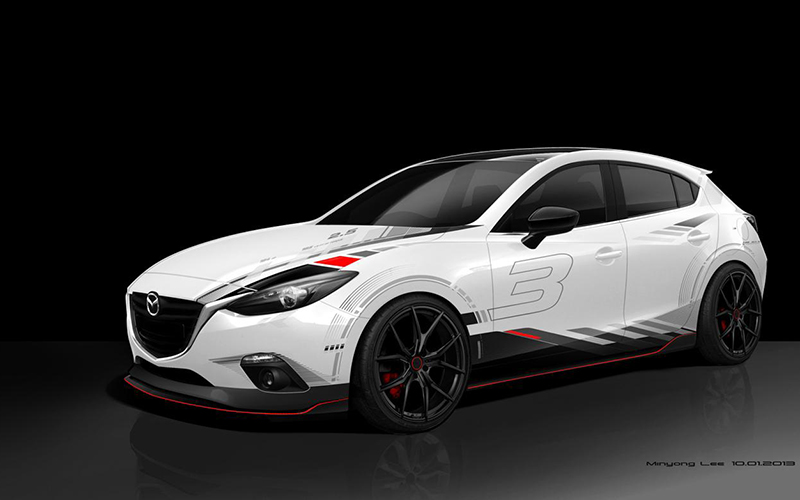
The Mazda 3 (or Axela in the Japanese market) is a C-segment passenger car manufactured by the Japanese automobile brand Mazda. This model, which uses the Ford Focus II platform, was introduced in 2004, replacing the Mazda 323.
RX-7
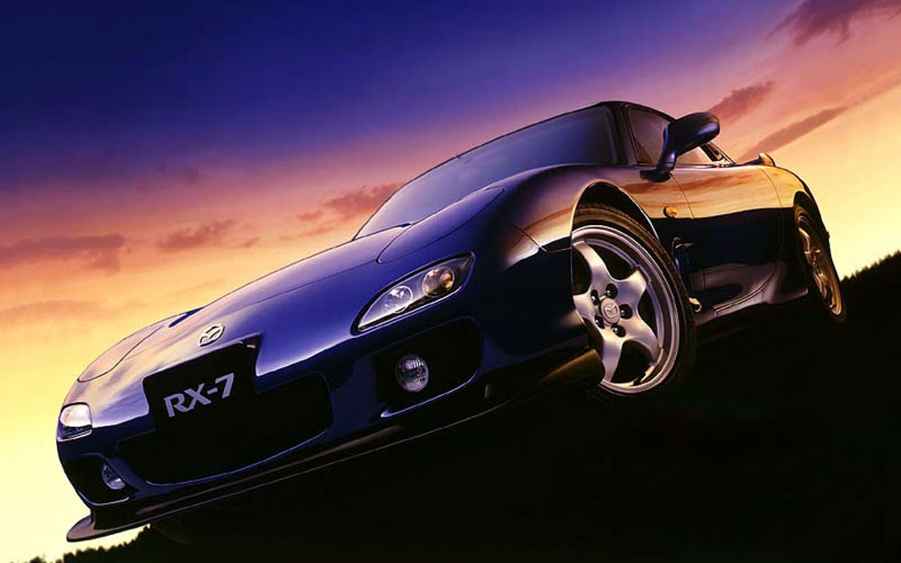
The Mazda RX-7 is a sports car produced by the Japanese manufacturer Mazda between 1978 and 2002. The RX-7 rivaled other affordable sports cars, such as the Toyota Supra, the Honda NSX, the Nissan Z line, and the Nissan skyline.
RX-8
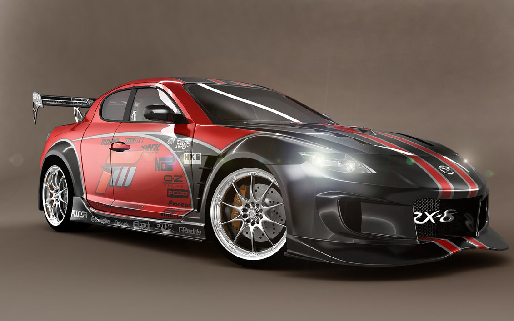
The Mazda RX-8 was a sports car produced by the Japanese manufacturer Mazda from the summer of 2002 to December 2010. It was a four-door coupe with a longitudinal front mid-engine propulsion. It is the successor to the Mazda RX-7.
Subaru
Subaru
Subaru Motor Company is a Japanese automobile manufacturer, and is a subsidiary of Fuji Heavy Industries (FHI). General Motors was a minority shareholder with 20% of this company from 1999 to 2005, when they sold 8.7% of their shares to Toyota, and left the rest on the open market. Toyota has expanded its participation and since 2008 it has 16.5% of the shares
Impreza
The Subaru Impreza is a C-segment passenger car produced by the Japanese manufacturer Subaru since 1992. The second generation of the Impreza was launched in 2001, and the third was presented to the public in 2007.
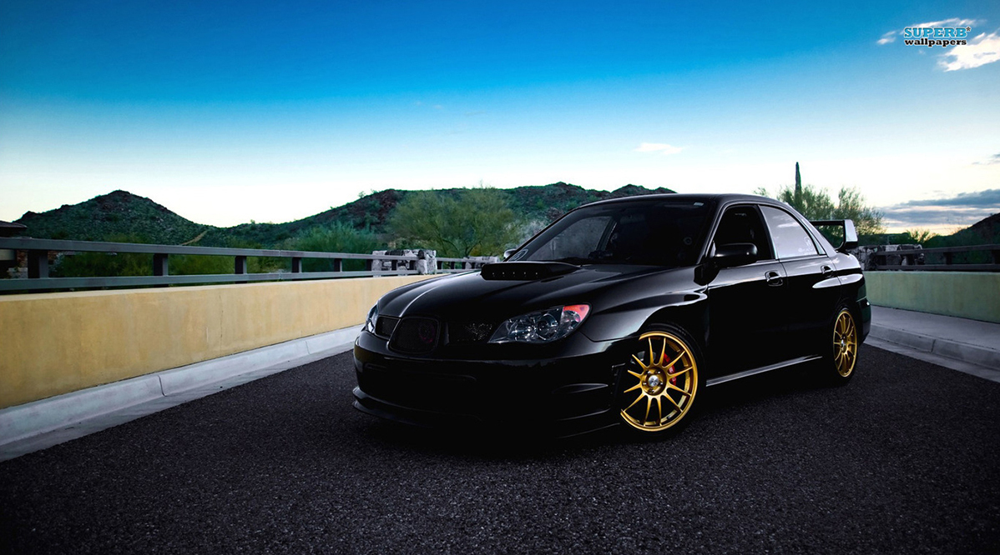XV
The Subaru XV is a C-segment SUV produced by the Japanese manufacturer Subaru since 2011. Launched on the European market in January 2012. The Subaru XV is developed on the same platform as the IV generation Subaru Impreza.
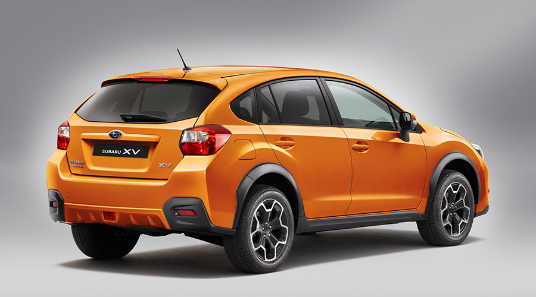